Monasterios | Iglesias | Capillas .:
Iglesias | Capillas .: enlaces
Convento de San Felipe el Real (desaparecido, fue Mentidero de la Villa)
Convento de San Felipe el Real (desaparecido, fue Mentidero de la Villa) [Alatriste]

Basílica de Nuestra Señora de Atocha (1951) Avda de la Ciudad de Barcelona 1
Arquitecto.: Diego Méndez arquitectura herreriana
Foto: J.A. Padilla

Basílica de Nuestra Señora de Atocha adosado al Panteón de los Hombres Ilustres
Foto: J.A. Padilla
Es una de las siete basílicas que existen en Madrid
Basilicas.:
Basílica de Jesús de Medinaceli Basílica Pontificia de San Miguel Basílica de La Milagrosa
Basílica Hispanoaméricana de Nuestra Señora de la Merced, de Oiza y Laorga Basílica de San Francisco el Grande Nuestra Señora de Atocha
Real Basílica Colegiata de San Isidro
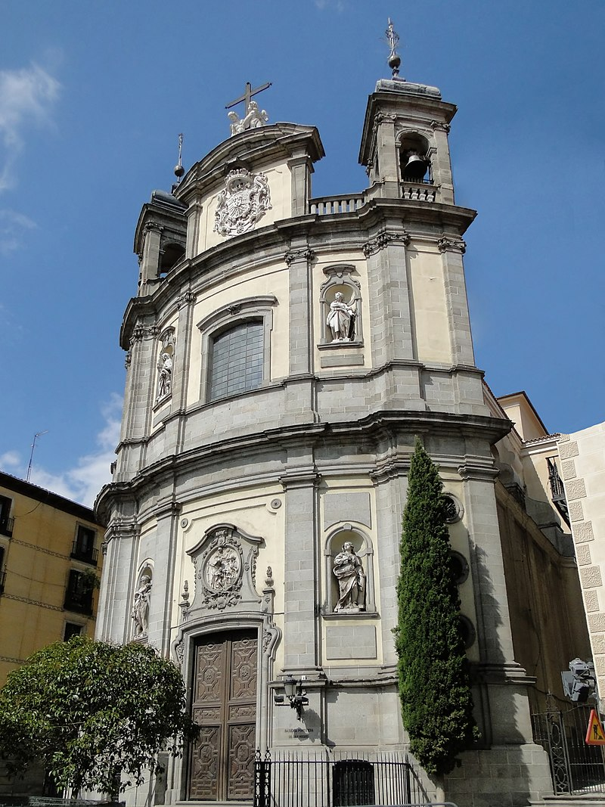
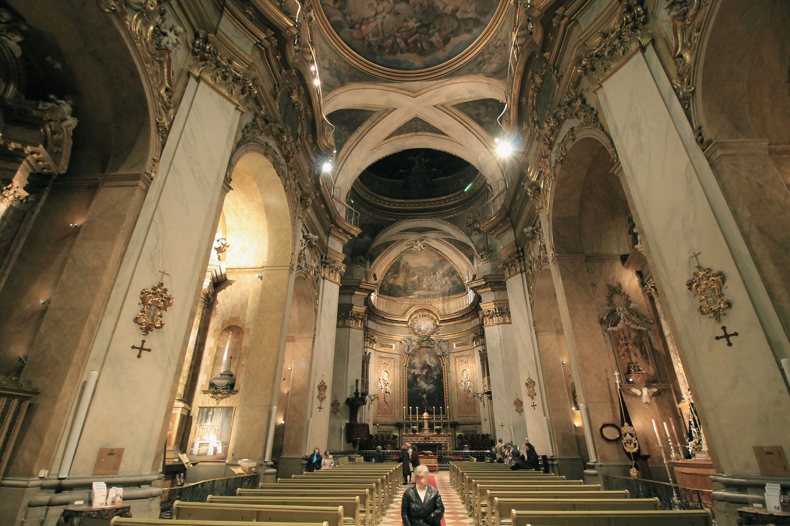
Basílica de San Miguel (1739-1754)
en un principio se llamó Iglesia de los Santos Justo y Pastor c/ San Justo 4
Arquitecto italiano Santiago Bonavía
transición artística entre el Barroco tardío italiano y el Neoclásico de reciente aparición
Basílica de San Miguel [Opus Dei] | Madrid de los Austrias
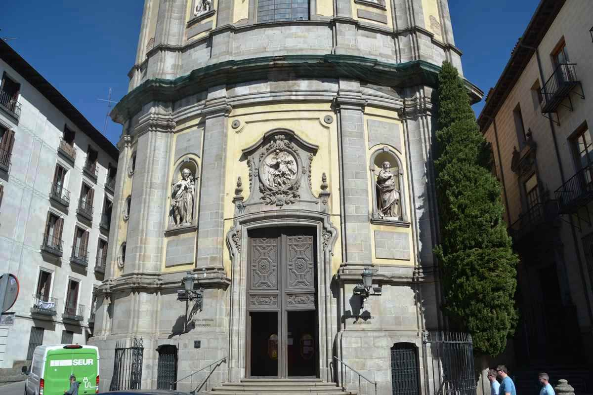
Basílica Pontificia de San Miguel (1739-1746) datos artísticos
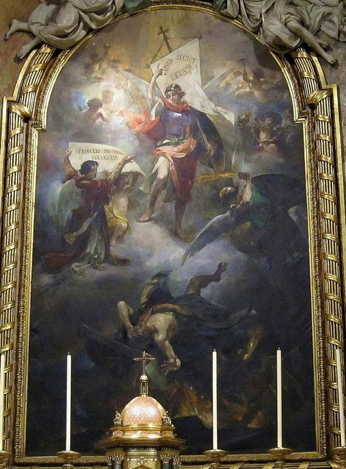
Basílica Pontificia de San Miguel | Viendo Madrid
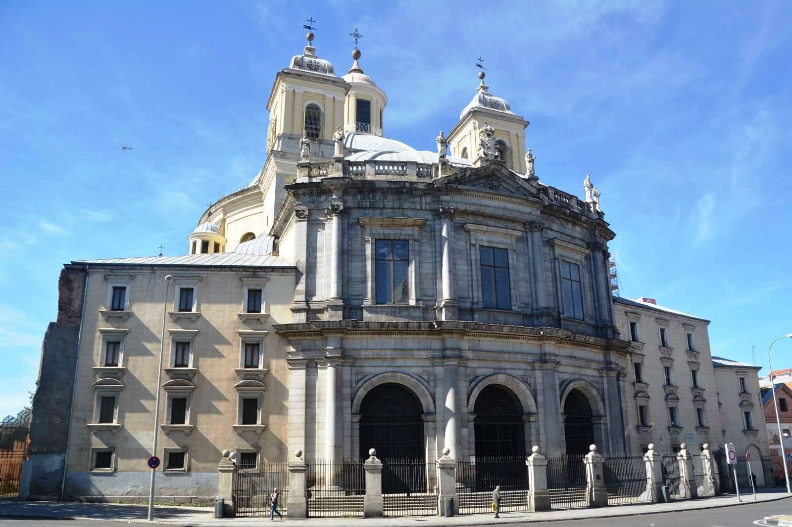
Basílica de San Francisco el Grande basílica y museo visita gratuita los jueves
La sillería del coro del templo se trajo del monasterio del Parral, y la de la Sacristía y Sala Capitular del Paular. (miradormadrid.com)
Basílica de San Francisco el Grande visita virtual madrida360.es
Basílica de San Francisco el Grande reportaje completo
siete maravillosas puertas de las cuales, la principal es excepcional, en madera de nogal con un bellisimo Crucificado rematándola, del s.XIX y obra todas ellas de Agustin Mustieles
Basílica Hispanoaméricana de Nuestra Señora de la Merced, de Oiza y Laorga
Una iglesia moderna que ha llegado inacabada a nuestros días

Basílica de la Milagrosa (1900 y 1904) c/ García de Paredes 45 esq con c/ Fernández de la Hoz
Los arquitectos responsables de la obra fueron Juan Bautista Lázaro de Diego y Narciso Clavería y de Palacios
El estilo del exterior, con fachada en H y el rosetón de estilo neogótico también muestra algunos rasgos de inspiración mudéjar como la retícula de arcos mixtilíneos a modo de sebka que se sitúan sobre la portada de la basílica, mientras que en el interior predomina el gótico


Real Colegiata de San Isidro y Nuestra Señora del Buen Consejo c/ Toledo 37

Sepulcro en la Colegiata de San Isidro

Capilla de San Isidro

Ermita de San Isidro

Cuadra de San Isidro
Catedral de Santa María Magdalena: Pascua ortodoxa en Hortaleza artículo nº 7
Palacio arzobispal de Madrid calles de San Justo 2 y la Pasa
Calle del Panecillo y de la Pasa
Calle de la Pasa y Pasadizo del Panecillo: secretos, robos y matrimonios
Monasterio de Santo Domingo el Real y la Madona de Madrid
Convento de Santo Domingo el Real
Real Monasterio de las Descalzas Reales
Real Monasterio de las Descalzas Reales Reabrimos Las Descalzas Reales -youtube
Real Monasterio de las Descalzas Reales La reapertura de Las Descalzas -youtube
Real Monasterio de las Descalzas Reales | pintura mural escalera investigart.com
Real Monasterio de las Descalzas Reales Entradas
Real Monasterio de las Descalzas Reales juancato.es
Iglesia del Convento Descalzas Reales -madrida360.es
Real Monasterio de la Encarnación juancato.es
Real Monasterio de la Encarnación
Real Monasterio de la Encarnación Pl. de la Encarnación, 1 (enfrente Plaza de Oriente)
Comendadoras de Santiago o Real Monasterio de Santiago el Mayor Pl. de las Comendadoras, 10
En el altar mayor llama la atención el gran lienzo retablo de Luca Giordano, el "fa presto" representando a Santiago en su caballo blanco, en el plano celestial de arriba, ayudando a las huestes cristianas en su lucha contra los musulmanes
Comendadoras de Santiago o Real Monasterio de Santiago el Mayor Apertura restauración
De la polémica Almudena a un ‘San Pedro’ futurista | Blog Sepa usted | EL PAÍS
Fotos: Las catedrales que pudo tener Madrid
Monasterio de Santa María de El Paular Retablo gótico en alabastro que preside la iglesia
Monasterio de Santa María de El Paular
Monasterio de Santa María la Real de Valdeiglesias Pelayos de la Presa
Se visita los fines de semana Por libre 3€ o guiada a las 13:00, 10€
https://monasteriopelayos.es
Camarín de la Virgen del Rosario de la iglesia de San Pedro Ad Víncula, Vallecas
Camarín de la Virgen del Rosario de la iglesia de San Pedro Ad Víncula, Vallecas
Huerto de las Monjas Sacramento 7
 Iglesia de San Fermín de los Navarros neomudéjar | Eduardo Dato 10
Iglesia de San Fermín de los Navarros neomudéjar | Eduardo Dato 10Iglesia de San Fermín de los Navarros neomudéjar | Eduardo Dato 10 -es.wikipedia
Ermita de San Antonio de la Florida esmadrid.com
Fundación Carlos de Amberes c/ Claudio Coello
Catedral de la Almudena miradormadrid.com
Cripta de la Catedral de la Almudena miradormadrid.com
Iglesia del convento del Corpus Christi (Las Carboneras) del siglo XVII
(porque guarda una imagen de la Inmaculada que fue encontrada en una carbonería)
Plaza del Conde de Miranda | Calle del Codo Reportaje completo
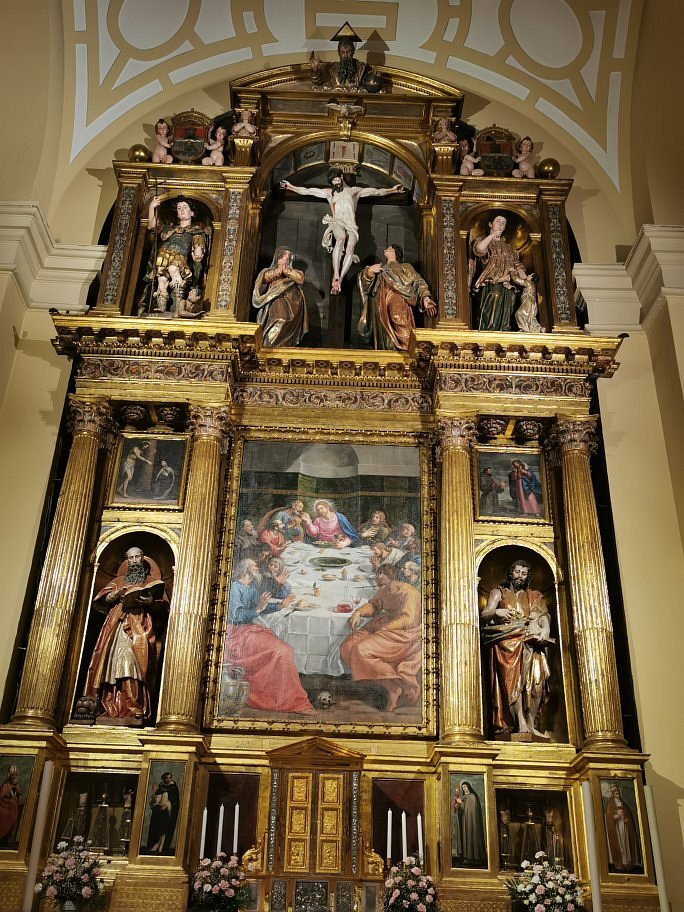
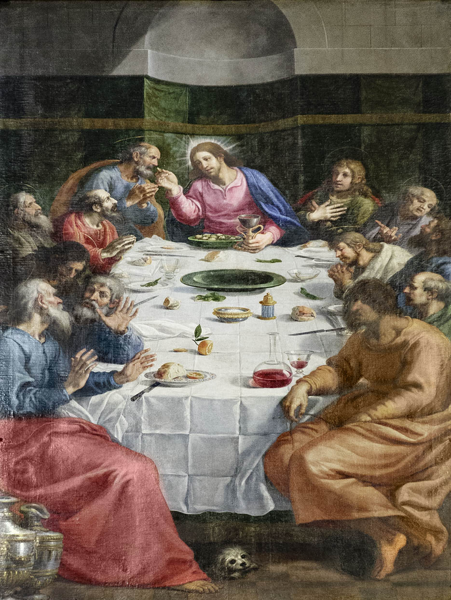
Monasterio Jerónimo del Corpus Christi vulgo Carboneras
El retablo mayor del Convento de las Carboneras del Corpus Christi obra de Antón de Morales (1622) con el lienzo central de la Última Cena (1634) de Vicente Carducho
El Convento de las Carboneras, oficialmente conocido como Monasterio Jerónimo del Corpus Christi - Carboneras es el nombre por el que se conoce popularmente a esta comunidad.
En 1647, unos niños arrastraban por la callejuela de Puñoenrostro un cuadro de la Inmaculada Concepción que habían encontrado en la carbonería del padre de uno de ellos. El franciscano José Canalejas se dio cuenta y les convenció para que lo llevaran al cercano monasterio de monjas jerónimas, quienes lo aceptaron con agrado y extendieron su devoción por Madrid. Hoy se contempla enfrente del cancel de entrada a la iglesia.
Las Carboneras (Convento de Jerónimas del Corpus Christi) dulces
Convento de San Plácido "Anunciación" de Claudio Coello | esquina de las calles San Roque y Pez
Convento de San Plácido "Anunciación" de Claudio Coello | abierto 10:30 a 17:00 /5€
Convento de San Plácido Barroco madrileño
Los cuatro retablos, especialmente el del altar mayor, obra de los hermanos Pedro y José de la Torre. De nuestro gran escultor Manuel Pereira son los santos benedictinos y bernardos De Gregorio Fernández es el Cristo Yacente uno de los más contenidos y delicados que hizo el maestro de los imagineros. El rey Felipe IV consideraba a Fernández el mejor de los tallistas: “Es el escultor de mayor primor que hay en mis reinos”.
El retablo mayor enmarca un soberbio lienzo de El misterio de la Encarnación "Anunciación" de siete metros de altura, obra maestra de un Claudio Coello joven, en su mejor momento de inspiración.
De Coello son también los lienzos de los retablos laterales: San Benito y Santa Escolástica en el lado izquierdo, y la Visión de Santa Gertrudis, en el derecho.
Claudio Coello fue alumno del pintor madrileño Francisco Ricci quien tenía encargada la decoración del templo, pero fue capaz de reconocer la valía superior de su discípulo y le cedió los cuadros principales.
Ricci ayudado por Juan Cabezalero pintó al fresco la cúpula y las bóvedas. En las pechinas representó a las santas abadesas benedictinas.
Retablo benedictinas de San Plácido | Pedro y José de la Torre
Talla en Madera dorada y policromada
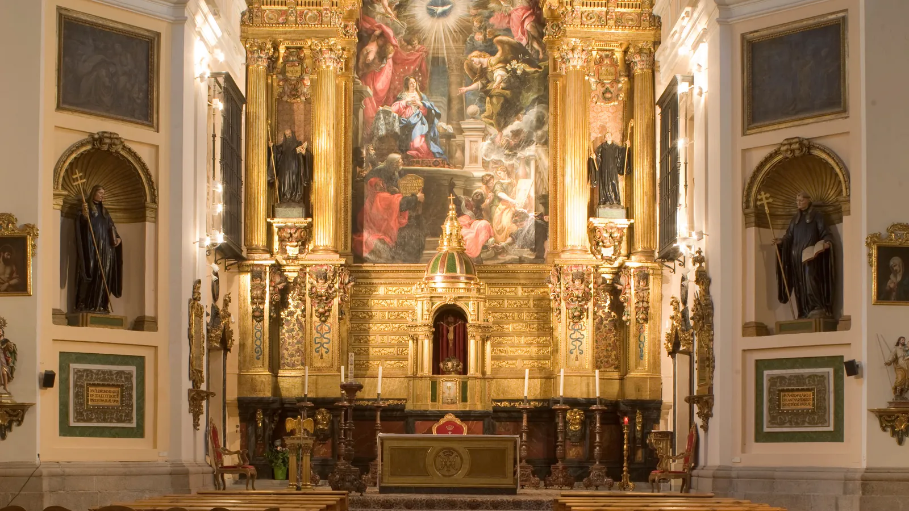
Claudio Coello | La Anunciación (1668) | Retablo mayor del Convento de San Plácido escenario de uno de los crímenes inquisitoriales más sonados de Madrid.
histórico Convento de San Plácido cerrado por falta de monjas tras 400 años en Malasaña Como curiosidad, cabe destacar que Diego de Velázquez pintó su Cristo crucificado -hoy en el Museo del Prado- para este convento, en cuya sacristía permaneció entre 1628 y 1808.
Hospital de la Venerable Orden Tercera de San Francisco de Asís (VOT) San Bernabé, 13
en funcionamiento de Madrid con más de tres siglos desde su fundación. Según subes por la escalera un Carreño y un Van Dick que son para caer rodando. Y en lo que era el Claustro, Antolínez, Mena... El hospital destaca por la gran cantidad de obras de arte que atesora en su interior, tanto esculturas, como la del busto de San Francisco de Agustín Querol, o el de Don Juan José de Austria, obra del flamenco Francisco Diesussart, como cuadros de artistas de la talla de Carreño de Miranda (“La Anunciación” y los “Desposorios Místicos de Santa Catalina de Alejandría con Cristo acompañada por San José y San Francisco”, ambos conocidos desde antiguo y muy brillantes de color. De lo mejor de la escuela madrileña del siglo XVII) gran retratista de la corte de Carlos II, o Van Dyck, cuyo cuadro "Cristo ante la mujer adúltera" preside uno de los tramos de la escalera del hospital.
Hospital de la VOT Gran reportaje
Hospital de la VOT Gran reportaje 2
Hospital de la VOT Gran reportaje 3
Hospital de la VOT Gran reportaje 4
Hospital de la Venerable Orden Tercera de San Francisco de Asís (VOT)
El hospital más antiguo de Madrid
Hospital de la VOT Cuadro Van Dyck "Cristo y la mujer adúltera"
Capilla del Cristo de los Dolores de la VOT (Venerable Orden Tercera de San Francisco de Asís)
Capilla del Cristo de los Dolores de la VOT
Capilla del Cristo de los Dolores de la VOT una de las cerraduras más antiguas de Madrid, Son de 1667 y 1668
Iglesias | Capillas .:
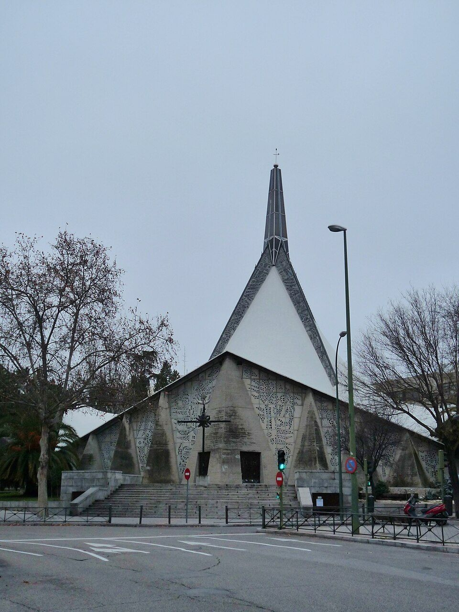
Parroquia de Nuestra Señora de Guadalupe c/ Puerto Rico 1 Metro Concha Espina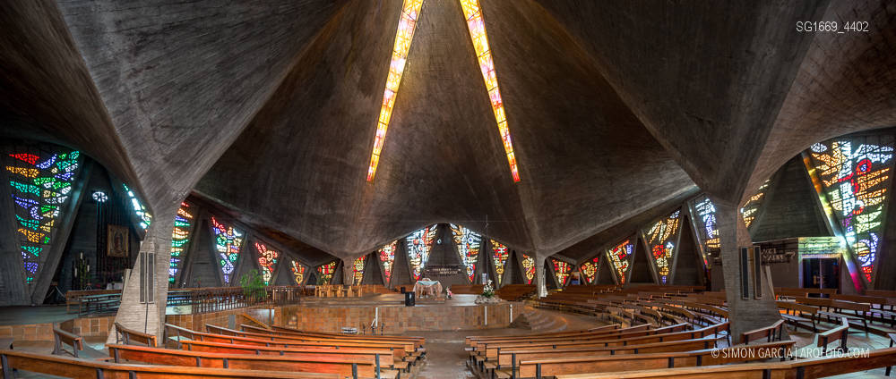
Parroquia de Nuestra Señora de Guadalupe Arquitectura mexicanaEnrique de la Mora Palomar, Félix Candela Outeriño, José Antonio Torroja Cavanillas, José Ramón Aspiazu Ordóñez (1962 - 1965)
Es una Iglesia muy arquitectonica, la llaman la del sombrero mexicano, la hizo un Arquitecto Mexicano junto con varios arquitectos y ingenieros.
Unas vidrieras con sol espectaculares
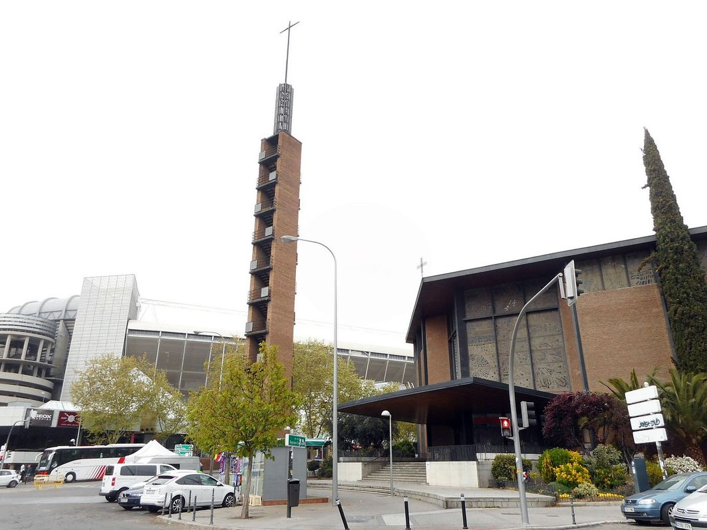
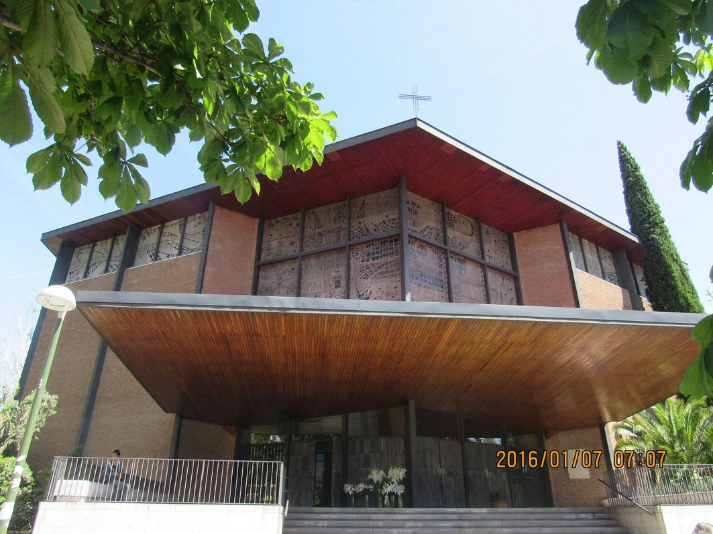
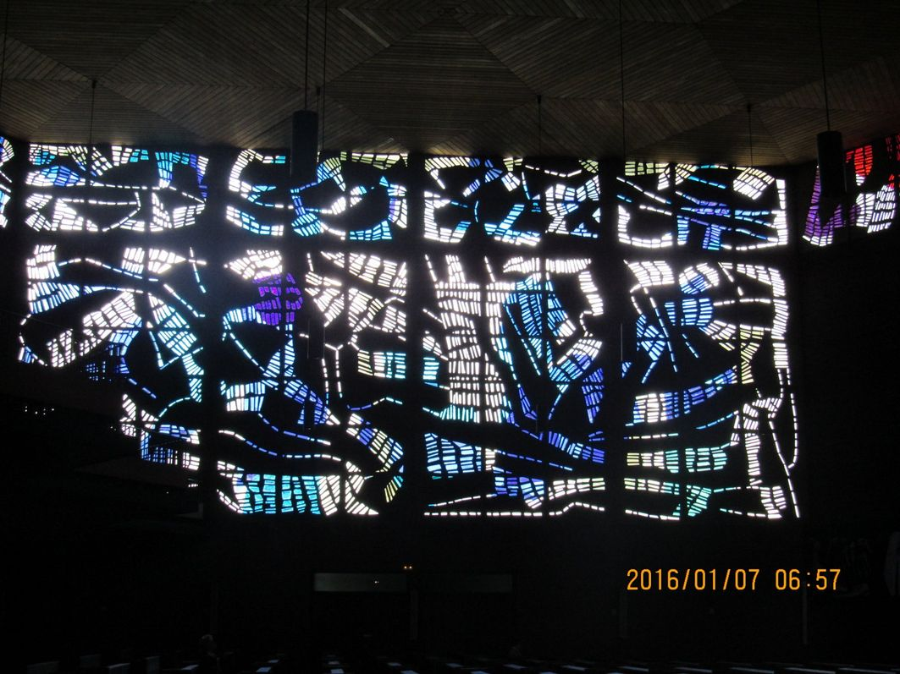
Vidriera de Ángel Atienza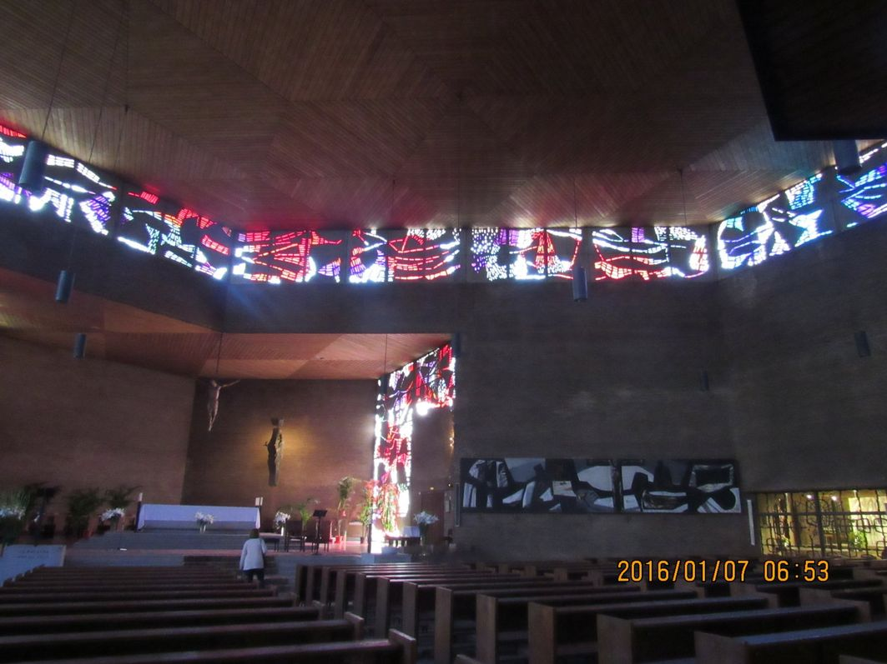
Parroquia de los Sagrados Corazones arquitecto Rodolfo García-Pablosen el Paseo de la Habana 31
Plaza de los Sagrados Corazones
Las vidrieras del presbiterio son obra de Sánchez Molezún
En el año 2004 el Colegio de Arquitectos de Madrid declaró este templo obra arquitectónica singular del s. XX, dedicando una placa al arquitecto y a los artistas de la época que colaboraron en él como Joaquín Vaquero Turcios, José Luis Alonso Coomonte, Manuel Suárez Molezún, Carlos Muñoz de Pablos, José Luis Sánchez, Amadeo Gabino y Francisco Ferreras.
COAM.: Trabajaron en el edificio distintos artistas de la época: Vaquero Turcios, autor del viacrucis; Coomonte, de la rejería interior; Muñoz de Pablos y Suárez Molezún, de las vidrieras; y, finalmente José Luis Sánchez de la puerta exterior y Amadeo Gabino de la escultura exterior del Padre Damián.
Parroquia de los Sagrados Corazones Vitrales de Ángel Atienza (Madrid, 1964). Colaboración con Molezum
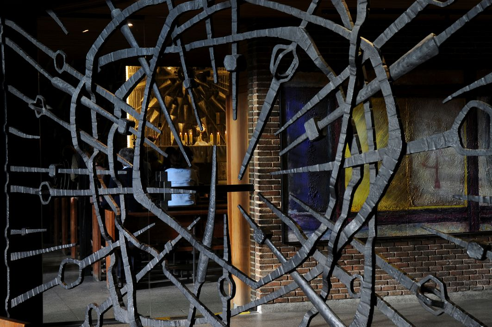
Parroquia de los Sagrados Corazones Rejas de José Luis Coomonte escultor (1932-2025)Reja de separación entre la nave central y la capilla penitencial (1963)
 Parroquia de los Sagrados Corazones La parroquia del Santiago Bernabéu
Parroquia de los Sagrados Corazones La parroquia del Santiago BernabéuLa escultura de José Luis Sánchez en Madrid | Puertas entrada Parroquia de los Sagrados Corazones
Parroquia Hispanoamericana de la Merced C. Edgar Neville 23 -googlemaps
 Parroquia de San Agustín c/ Joaquín Costa 10 (Colonia de El Viso)
Parroquia de San Agustín c/ Joaquín Costa 10 (Colonia de El Viso)Arquitecto.: Luis Moya (1946-50)
Es muy similar a la iglesia de la Universidad Laboral de Gijón del mismo autor y mismas fechas.
Iglesia Parroquial de San Agustín Bien de Interés Cultural (BIC)
 Parroquia de San Agustin mosaico abside Santiago Padrós
Parroquia de San Agustin mosaico abside Santiago Padrósvidrieras de carácter decorativo, de Santiago Padrós y un friso con pinturas murales del artista Juan Esplandiú Peña que representan la vida de San Agustín y esculturas de Enrique Pérez Comendador y José Espinós Alonso
Santiago Padrós Pintor y mosaísta catalán S.XX (Mosaicos)
Santiago Padrós Indice obras
Iglesia de Santa María La Antigua Descubierta una joya pintura medieval en medio de Carabanchel
Ermita de Santa María La Antigua | Carabanchel 360º
Ermita de Santa María La Antigua | Carabanchel En ellas se pueden distinguir escenas de la vida de San Isidro, de María Magdalena (posible advocación primigenia de la parroquia) así como del martirio de San Sebastián. También motivos heráldicos que han servido para datarlas, según expertos, a principios del siglo XVl
Ermita de la Virgen del Puerto miradormadrid.com
Iglesia y convento de las Trinitarias descalzas (Monasterio de San Ildefonso y San Juan de la Mata)
Iglesia del Convento de Mercedarias Descalzas de don Juan de Alarcón
Iglesia del Convento de Mercedarias Descalzas de don Juan de Alarcón googlemaps


Iglesia de las Religiosas de María Inmaculada (Casa Madre) c/ Fuencarral 97
Iglesia proyectada por el arquitecto Daniel Zavala Álvarez en el año 1921 y construida entre los años 1922 y 1925 en los jardines del Colegio María Inmaculada En el año 1898 el arquitecto José Marañón Gómez-Acebo convirtió en Colegio lo que hasta entonces fue el Palacio del Conde de Vistahermosa
Iglesia de las Religiosas de María Inmaculada (Casa Madre) c/ calle Fuencarral 97 -googlemaps
Iglesia de San Gines web.archive.org
Capilla del Cristo de los Dolores de la VOT (Venerable Orden Tercera de San Francisco de Asís)
Capilla del Cristo de los Dolores de la VOT
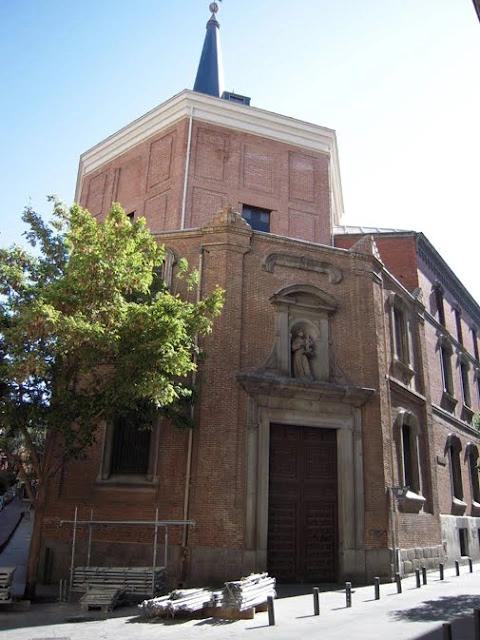
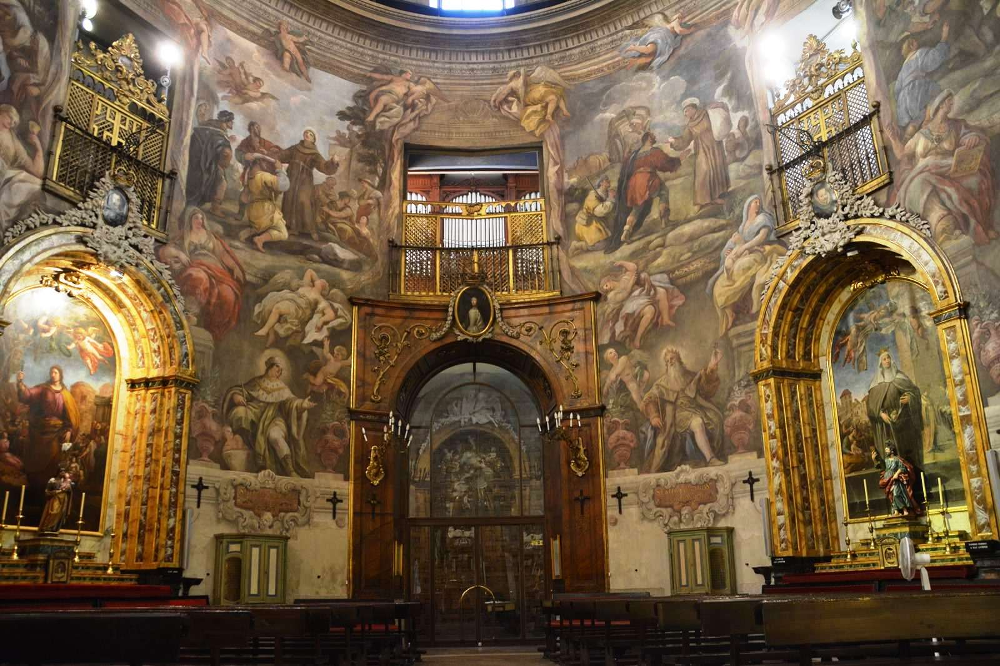
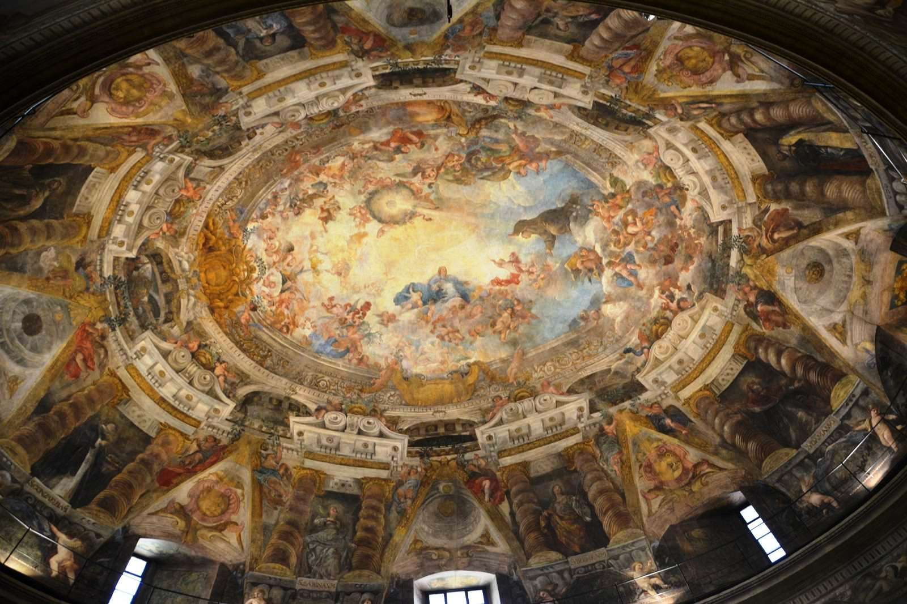
Iglesia de San Antonio de los Alemanes (1640) (San Antonio de los portugueses en 1624)
Pinturas y más en San Antonio de los Alemanes (inicios San Antonio de los Alemanes) En primer lugar está la cúpula de grandes dimensiones y forma elíptica. Fue pintada por Francisco Rizzi en 1662
con intervenciones de Francisco Carreño y Luca Giordano. Si te fijas un poco, en la parte central verás la Gloria de San Antonio una escena en la que el santo recibe al Niño Jesús de manos de la Virgen.
Iglesia de Santa Teresa y San José y Convento de los padres Carmelitas Descalzos, 1923-1928 - Plaza España, 13 - Arquitecto: Jesús Carrasco-Muñoz Encina
A destacar su cúpula neobizantina, recubierta de azulejos, obra del siempre genial Daniel Zuloaga.

Iglesia de Santa María del Monte Carmelo c/ de Ayala 37
Arquitecto: Luis Gutiérrez Soto (1960 y 1966)
Vidrieras.: Manuel Sánchez Molezún


Parroquia de San Clemente Romano C. de la Coalición 17 Villaverde
Arquitectos: (Luis José Mora) Mora Gutiérrez, Luis José (2003-2005)
Burón García, Alfonso (2002-2002)
Miguel Sánchez, Mercedes de (2002-2002)


Santuario de María Auxiliadora (Santuario de Salesianos Atocha) Rda. de Atocha 25
Arquitecto.: Enrique Huidobro quien comenzó la edificación en 1955, y su hijo Javier Huidobro quien la terminó en 1972. El proyecto de su conjunto interior específico fue concebido por el arquitecto Javier del Amo
Las grandes y coloridas vidrieras presentes en sus muros laterales, obra del artista Ángel Atienza que representan los siete Sacramentos (lateral derecho) y las virtudes teologales (lateral izquierdo).
El mismo artista es autor del Viacrucis del Santuario, compuesto por unos pasos de grandes dimensiones ubicados en la parte más alta de los muros laterales

Iglesia de Santa Cristina edificio neomudéjar -Puerta del Ángel en el Paseo de Extremadura
Fue una iniciativa de la Reina Regente María Cristina a finales del siglo XIX. En 1892 se inauguró un asilo para niños necesitados en el Paseo de Extremadura, y en 1904 se encargó la construcción de la iglesia anexa, terminada en 1906. Arquitecto: Enrique María Repullés y Vargas

Iglesia de Santa Cristina Baldaquino en el altar

Iglesia de Santa Cristina pasionpormadrid.com
Iglesia de Nuestra Señora de los Ángeles (1902) C/ Bravo Murillo 93
Arquitecto: Enrique María Repullés y Vargas
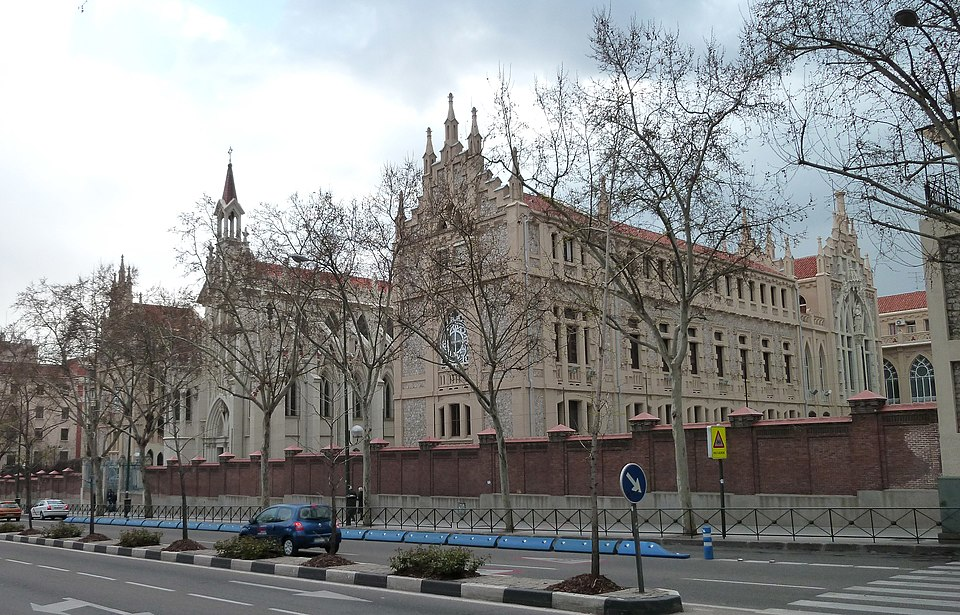
Iglesia Colegio Nuestra Señora del Pilar neogótico C/ del Príncipe de Vergara 41
Palacio del Conde de Vistahermosa C/ Divino Pastor 2 C/ Fuencarral 97 y C/ San Andrés 34
En el año 1898 el arquitecto José Marañón Gómez-Acebo convirtió en Colegio María Inmaculada en el chaflan del jardín.


Catedral Ortodoxa Griega de San Andrés y San Demetrio C/ Nicaragua 12
santuario griego decorado al estilo bizantino

Parroquia de San Roque c/ de la Oca 33
El autor de las tablas que representan el apostolado en la Parroquia de San Roque de Carabanchel es Miguel Ángel García de la Santa
Estas doce tablas están situadas en el presbiterio, bajo el gran ventanal de hormigón y cristal.
Detalles de la obra: Son 12 tablas alineadas horizontalmente que retratan a los apóstoles.
Ubicación: Presbiterio de la iglesia, formando parte destacada de la decoración moderna del templo.
Estilo: Sigue una estética contemporánea acorde con la arquitectura racionalista de la parroquia, diseñada por los arquitectos M. Jaén Valdelomar y P. J. Pascual
Parroquia Santa María del Silencio Raimundo Fernández Villaverde 18 Las cerámicas son obra de Daniel Zuloaga que emplea dos técnicas, la del trencadiç (Antonio Gaudí) y la de paneles cerámicos, constituidos por azulejos denominados gotas de agua. Las vidrieras son de la casa francesa de Maumejean
Parroquia de Santa María del Silencio madrida360.es
 Iglesia de San Andrés Pl. de San Andrés, 1
Iglesia de San Andrés Pl. de San Andrés, 1 Iglesia de San Andrés Pl. de San Andrés, 1
Iglesia de San Andrés Pl. de San Andrés, 1 Iglesia de San Andrés Portada entrada por el jardín
Iglesia de San Andrés Portada entrada por el jardín Iglesia de San Andrés El exalcalde Manzano pone cara a San Isidro en un cuadro
Iglesia de San Andrés El exalcalde Manzano pone cara a San Isidro en un cuadro Iglesia de San Manuel y San Benito | calle de Alcalá, 83, en frente del Parque del Retiro
Iglesia de San Manuel y San Benito | calle de Alcalá, 83, en frente del Parque del RetiroIglesia de San Manuel y San Benito | Arquitecto:Fernando Arbós y Tremanti
 Iglesia del Buen Suceso 1º Puerta del Sol / 2ª Calle Princesa
Iglesia del Buen Suceso 1º Puerta del Sol / 2ª Calle PrincesaIglesia del Buen Suceso El derribo de la iglesia del Buen Suceso
Iglesia del Buen Suceso 2ª Iglesia del Buen Suceso de Madrid (1854-1975)
Iglesia del Buen Suceso Ruinas en el Monte de El Pardo en Google Maps
Iglesia-Hospital del Buen Suceso
Iglesia de Santa Bárbara (Convento de las Salesas Reales)
Iglesia de Santa Bárbara (Salesas Reales) web.archive.org
Iglesia de Santa Bárbara (Salesas Reales) Mausoleo del general Leopoldo O´Donnell obra de Jerónimo Suñol (1870)
Convento de las Salesas Reales Calle del General Castaños, 2

Parroquia Santa Bárbara (Convento de las Salesas Reales y Antiguo Real Monasterio de la Visitación)
La iglesia perteneció al magnifico Real Monasterio de la Visitación, construído durante el reinado de Fernando VI tercer rey Borbón en España y su esposa Bárbara de Braganza

Parroquia Santa Bárbara (Convento de las Salesas Reales) | Sepulcro Fernando VI Encargados por su medio hermano, el ya rey Carlos III se añadieron más tarde al templo, diseñados por Sabatini y esculpidos por Francisco Gutierrez El del Rey está situado en el crucero al lado de la Epístola con alegorías de la Justicia, la Abundancia y el Tiempo
Parroquia Santa Bárbara (Convento de las Salesas Reales) Cuadros y esculturas
Parroquia Santa Bárbara (Convento de las Salesas Reales)
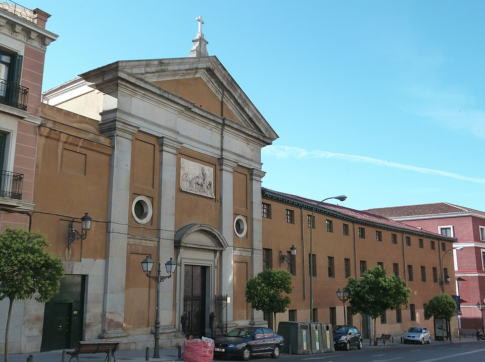
Segundo Monasterio Salesas de la Visitación o Convento de las Salesas Nuevas C/ San Bernardo 72

Iglesia de Nuestra Señora de Montserrat estilo barroco C/ San Bernardo 79
Construcción 1668–1740
Arquitectos.: Sebastián Herrera | Gaspar de la Peña | Pedro de Ribera
Iglesia del Sacramento | Iglesia Catedral de las Fuerzas Armadas Calle Sacramento 11, próxima a la Calle Mayor
Iglesia de Santa Teresa y San José, la cúpula de colores Plaza España - Mirador Madrid
Iglesia de San Millán y San Cayetano c/ Embajadores 15 (Guerra civil)
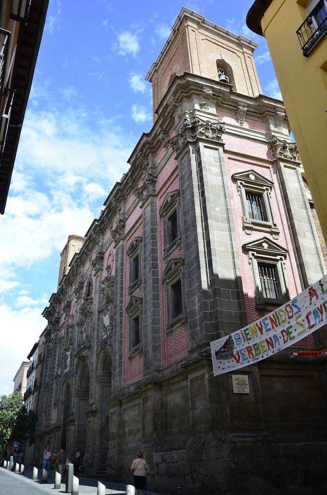
Iglesia de San Millán y San Cayetano Estilo Barroco c/ Embajadores 15 (Lavapiés)
Iglesia de San Millán y San Cayetano Presbiterio y Altar Mayor
presenta una reproducción de cuadros religiosos del Museo del Prado, National Gallery de Londres y Hermitage
Iglesia de San Millán y San Cayetano La Trinidad - El Greco (1577-1579) Museo del Prado
Iglesia de San Lorenzo c/ Doctor Piga, n.º 4 (Lavapiés) "Templo de las Pulgas" por su tamaño
En agosto se celebran las fiestas de San Lorenzo
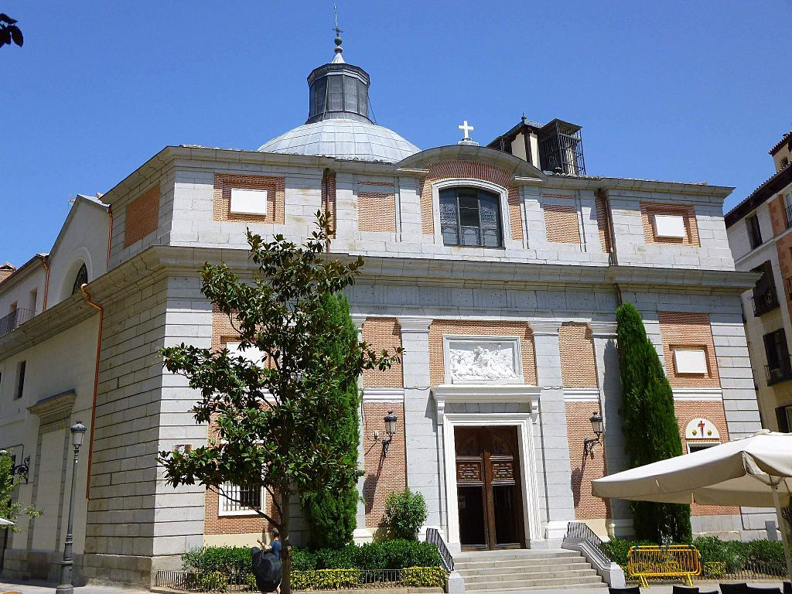
Iglesia de Santiago y San Juan Bautista plazuela de Santiago

Iglesia de Santiago y San Juan Bautista
Santiago Matamoros de Francisco Rizi (1657)
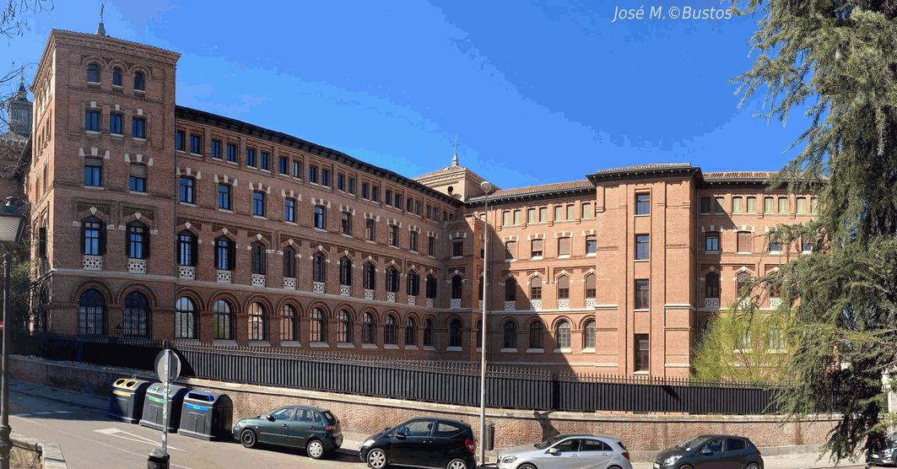
Seminario Conciliar de Madrid | Seminario San Damaso El Seminario Conciliar de Madrid está ubicado en la colina de Las Vistillas Su construcción está ligada a la creación de la diócesis de Madrid el 7 de marzo de 1885 , cuando el papa León XIII segregó la provincia de Madrid de la archidiócesis de Toledo. Este hecho llevaba implícito la creación de un seminario.
La construcción comenzó en 1891 bajo proyecto de Francisco de Cubas sobre el solar que anteriormente ocupó el Palacio de los Duques del Infantado y de Osuna . Años después, en 1901, el proyecto inicial fue reformado por los arquitectos Miguel de Olabarría y Ricardo García Guereta siendo este último quien culminó las obras en 1906. El edificio tiene planta rectangular, con torreones en las esquinas y una torre principal de acceso. Se organiza en torno a dos amplios patios interiores En el cuerpo central se encuentra la iglesia , de planta de cruz latina y una sola nave. El presbiterio y el ábside sobresalen del conjunto arquitectónico. Su fachada de ladrillo visto presenta grandes ventanales y una decoración de inspiración neogótica . En 1950 se amplió el edificio y en 1977 fue declarado monumento del conjunto histórico-artístico de Madrid.
Actualmente, además de ser la sede del seminario de la archidiócesis de Madrid también alberga la Facultad de Literatura Cristiana y Clásica San Justino de la Universidad Eclesiástica San Dámaso
Seminario Conciliar de Madrid | Seminario San Damaso esmadrid.com
Iglesia de la Concepción Real de Calatrava conocida como iglesia de las Calatravas
Iglesia de la Concepción Real de Calatrava (Iglesia de las Calatravas) Alcalá 25
Iglesia de la Concepción Real de Calatrava (Iglesia de las Calatravas) facebook
Casa del cura de San José


Iglesia de Santa Teresa y San José la cúpula bizantina de colores Plaza España
Iglesia de Santa Teresa y San José y Convento de los padres Carmelitas Descalzos, 1923-1928 - Plaza España, 13 - Arquitecto: Jesús Carrasco-Muñoz Encina
A destacar su cúpula neobizantina, recubierta de azulejos, obra del siempre genial Daniel Zuloaga.
Iglesia de San Antón | Escuelas Pías de San Antón
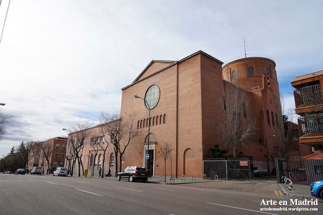
Iglesia del Espíritu Santo c/ Serrano 125
Se construyó en 1942 por el arquitecto Miguel Fisac aprovechó para su proyecto parte del Auditorio de la Residencia de Estudiantes
La atención pastoral de la Iglesia del Espíritu Santo está confiada a sacerdotes del Opus Dei.
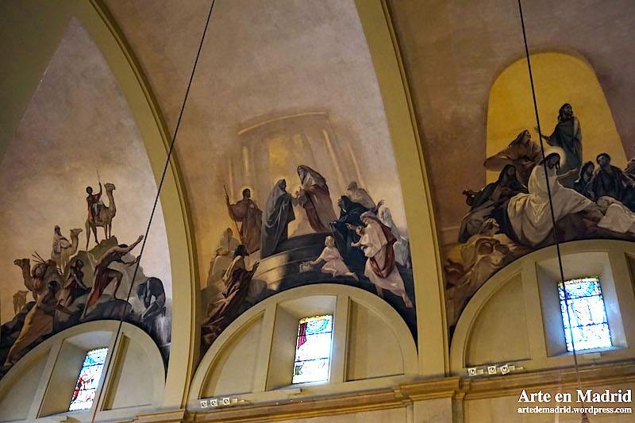
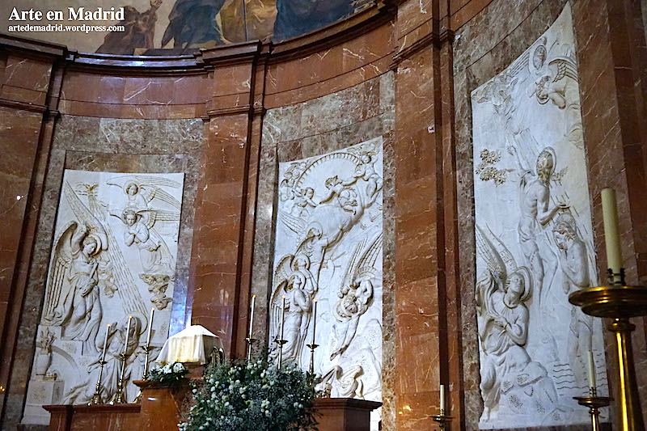
Iglesia del Espíritu Santo pinturas al fresco Ramón Stolz Viciano
relieves, de piedra blanca, obra del escultor Juan Adsuara
La cúpula más grande de España y la mini capilla Sixtina
La belleza discreta: Iglesia de la Buena Dicha
Capilla del Obispo rincón gótico en la plaza de la Paja 5
La capilla del Obispo de Plasencia Capilla de Nuestra Señora y san Juan de Letrán
Capilla del Obispo Dos retablos colaterales de la Capilla del Obispo, hoy desaparecidos
Capillas
Ermita de Nuestra Señora de la Antigua (Carabanchel) es la única ermita mudéjar
Ermitas madrileñas
Siete Iglesias de Madrid
Iglesia de San Jerónimo el Real
Iglesias de Conventos
Iglesias Neo Góticas
Iglesias Neo Mudéjar
Iglesias No Católicas
Iglesias en el Madrid de los Austrias
Iglesia de Santa Barbara (Salesas Reales)
Únicas Iglesias que se conservan del Madrid medieval.:
Iglesia de San Nicolás de Bari o de San Nicolás de los Servitas la iglesia más antigua de Madrid siglo XII
Iglesia de San Nicolás de Bari o de San Nicolás de los Servitas La misteriosa inscripción
Iglesia de San Nicolás de Bari también conocida como Parroquia de los Italianos
Desde 1825, la Iglesia está a cargo de la Orden Italiana de los Servitas, celebrando misas en dicho idioma cuando lo solicita un adecuado número de personas.
Iglesias siglos XII a XIV, Madrid Románico y Mudéjar
Iglesia de San Pedro el Viejo la iglesia más antigua de Madrid siglo XII
conservan los últimos escudos reales madrileños anteriores a los Reyes Católicos
Iglesia de San Nicolás de Bari o de San Nicolás de los Servitas | San Pedro el viejo
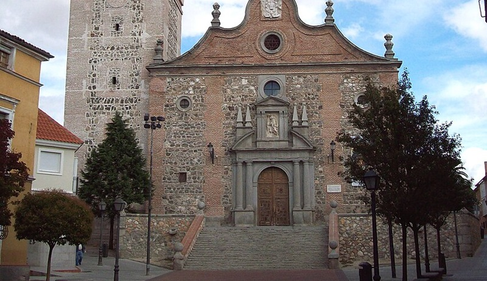
Iglesia de San Pedro ad Vincula (Villa de Vallecas) El Ministerio de Cultura concluye la restauración del retablo de la Iglesia de San Pedro ad Vincula (Villa de Vallecas)
.jpg)
 restauracion.jpg)
Iglesia de San Pedro ad Vincula (Villa de Vallecas) Cuadro restaurado Monumental obra de "La liberación de San Pedro" cuadro de seis metros de alto que Francisco Rizi realizó en 1669
Las cinco iglesias de Madrid con los diseños más insólitos
Las treinta y tres iglesias más espeluznantes de Madrid